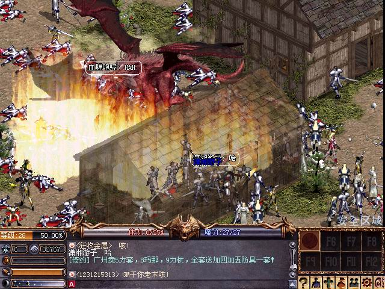
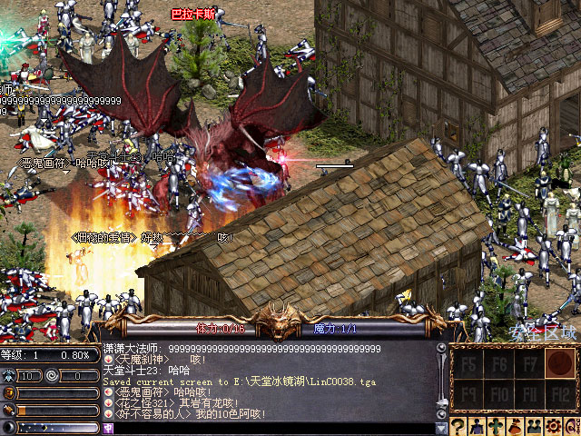

|
2003年4月6日
大陸伺服器遊戲管理員帳號遭入侵
來源：大陸天堂官方網站公告（由於鎖IP的關係，部分地區未必能夠看到）
鳴謝玩家xnf及xiatiantaire提供資料，在4月3日約晚上11時大陸天堂第一伺服器遭到黑客入侵，並在奇岩、銀騎、海音等村莊召喚火龍巴拉卡斯，引致大批玩家死亡，其後官方公佈了有關詳請及補償的資料，如下：
4月3日“一服”事故公告各位玩家你們好﹕
首先對4月3日23時左右發生的高級帳號被盜事件深表歉意﹐盜取帳號的黑客利用此帳號在村子裡召喚火龍和惡魔等高級怪物﹐導致很多玩家被這些高級怪物殺害﹐損失了經驗值和道具。
帳號被盜事件發生後新浪樂谷及時採取了措施並在幾分鐘內解決了問題﹐並決定按照游戲紀錄對遭受損失的玩家作出以下的補償。
* 經驗值 － 10級以上玩家給予11%的經驗值補償
* 道具 － 所有損失的道具都將被恢復
* 魔法 － 丟失4級以上的魔法的玩家﹐會把相應的魔法書放到本人的倉庫
恢復需要兩天的時間﹐希望大家給予理解並耐心等候。
再一次向各位蒙受損失的玩家致以深深的歉意﹐新浪樂谷將竭盡全力保證儘量不再發生類似的事故。
謝謝大家。 |
事件似乎是由於遊戲管理員的帳號外洩，繼而被人登入及用GM的指令在村莊召喚高級怪物所致。

 |